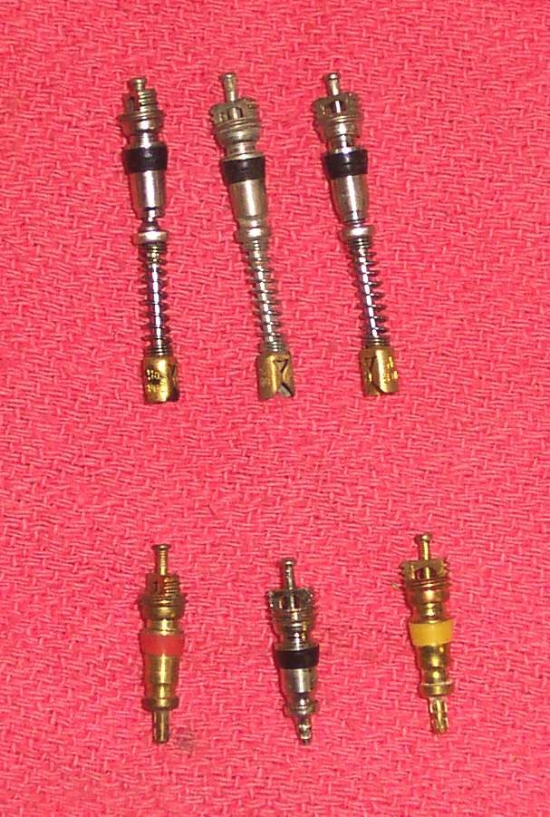
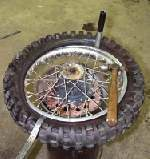
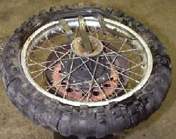
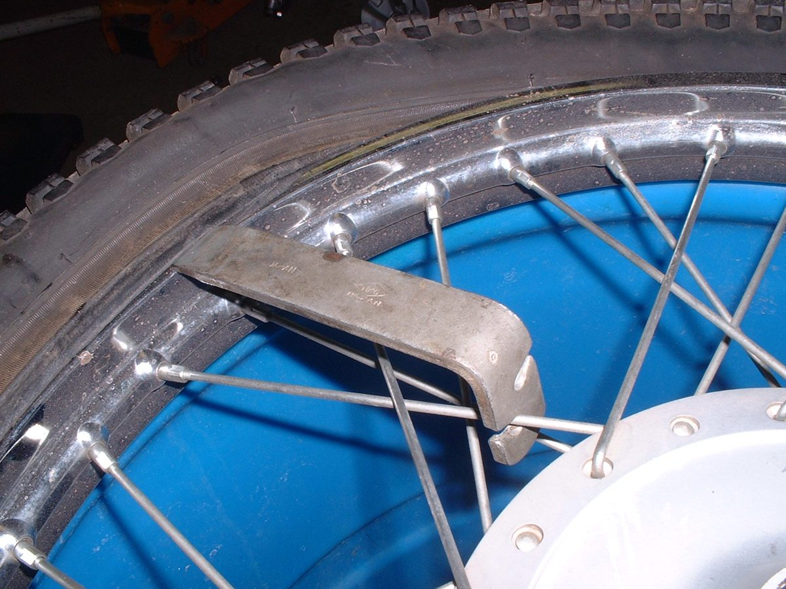
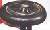

The tyre is fine after you pump it, but it is soft again after a day or a few days. Air is escaping through a small hole, the valve, the joint between tyre and rim (tubeless), or a crack in the rim. A low tyre wears fast, makes steering heavy, uses more fuel and can overheat and fail. This check finds where the air goes.
Is it safe to ride?
Only short distances with the pressure set correctly, and check it before every ride. If it goes soft within an hour, treat it as a flat and do not ride.
Quick checks first
- Measure both tyres cold with a good gauge. Is one really lower, or is the gauge wrong?
- Look at the valve cap: is it there?
- Look for a nail, screw or thorn in the tread.
- Is the tyre tubeless (TUBELESS or TL on the sidewall, valve fixed in the rim) or tube type?
Diagnose it step by step
1Set the correct pressure, then measure again after 24 hours (cold). Has it dropped noticeably?
- No: the tyre is holding. Small changes come from temperature. Check weekly with Check tyre pressure.
- Yes: go to step 2.
2Put soapy water on the valve tip. Does it bubble?
- Yes: the valve core leaks. Go to Air leaking from the tyre valve.
- No: go to step 3.
3Put soapy water round the valve base and bend the valve gently. Bubbles or cracks?
- Yes: the valve stem is perished or badly seated. Check and replace a tyre valve.
- No: go to step 4.
4Lift the wheel. Spray soapy water over the whole tread and both sidewalls, turning slowly. Do bubbles appear on the tread?
- Yes, from an object or small hole in the tread centre: tubeless, see Plug a tubeless tyre puncture; tube type, see Repair a puncture in an inner tube.
- Yes, from a sidewall cut or crack: the tyre cannot be repaired. Replace a tyre.
- No: go to step 5.
5Tubeless only: spray the line where the tyre meets the rim, both sides. Bubbles?
- Yes: go to Air leaking where the tyre meets the rim.
- No, or tube type: go to step 6.
6Look at the rim closely: dents on the edge, cracks near spokes or at the valve hole?
- Yes: go to Rim is dented or cracked.
- No: go to step 7.
7Tube type: remove the tube and test it in water.
- Small hole found: patch or replace the tube, and find what caused it (spoke end, rim tape, object).
- No hole and no other leak: the tyre may be old and porous, or the gauge is wrong. Check with a second gauge. Inspect tyres for wear and damage.
What happens if you keep pumping it up and riding: a low tyre flexes and heats. A tube can tear at the valve, and a tubeless tyre can come off its bead in a corner.
Causes, most likely first
| Cause | How to confirm | Fix |
|---|---|---|
| Small object in the tread | Bubbles at a nail or thorn | Tubeless plug or tube patch |
| Leaking valve core | Bubbles at the valve tip | Check and replace a tyre valve |
| Perished rubber valve | Cracks or bubbles at the valve base | Check and replace a tyre valve |
| Bead leak (tubeless) | Bubbles at the rim line | Bead leak |
| Rim crack or dent | Visible damage, bubbles at the rim | Rim damage |
| Old porous tyre | Slow loss, no single leak found | Replace a tyre |
Reference values (K-Light 125)
| Item | Value | Source |
|---|---|---|
| Cold pressure front / rear | 190 ± 10 kPa / 210 ± 10 kPa | K-Light 125 manual, PDF p. 71 |